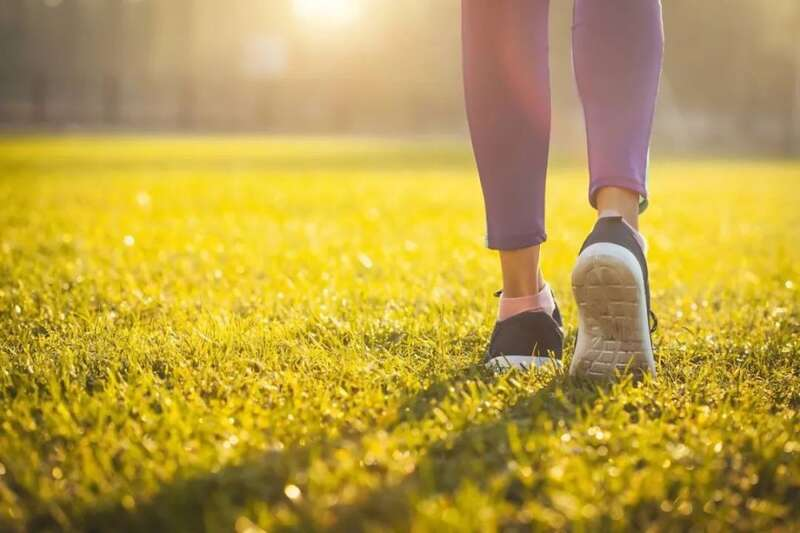
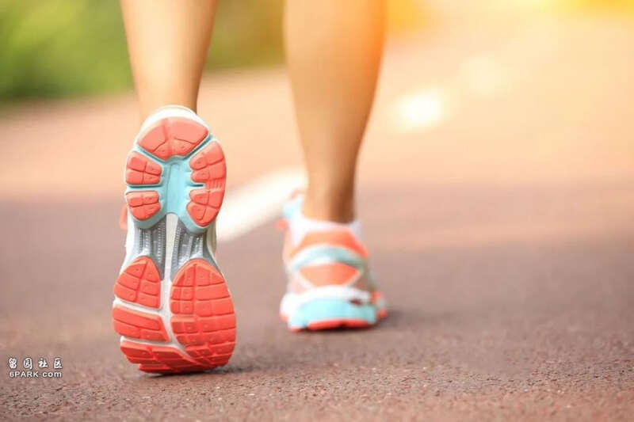
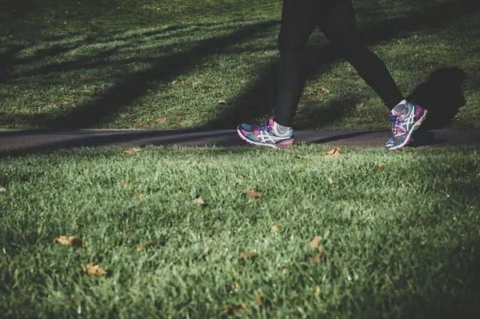

“久坐伤身”的道理大部分人都知道，我国一项研究显示，每天久坐大于6小时，与12种疾病高风险相关，包括缺血性心脏病、糖尿病、哮喘、慢性肾脏病、慢性肝病、甲状腺疾病、抑郁等。
其实，只要正确走路，并且达到一定的步数，就能帮身体“抵消”久坐带来的健康风险。

科学走路降低久坐风险
澳大利亚悉尼大学的研究人员在《英国运动医学杂志》上发表的研究表明，每天步数超过2200步时，就可降低死亡风险和心血管疾病风险；每天步数达到9000~10500步时，无论坐多久，死亡风险最低。
研究人员分析了英国生物银行数据库中72174名参与者，平均年龄为61岁，女性占58%，记录参与者每日步数和久坐时间的数据。在平均7年的随访期间，共记录了1633人死亡和6190起心血管事件。
结果发现，久坐时间超过10.5小时的参与者，当每天超过2200步时，就可降低死亡风险，每天走9000步时死亡风险降低39%；每天走9700步时心血管疾病风险最低，心血管疾病风险降低21%。
此外，无论久坐时间长短，即使每天走4000~4500步，也可以获得最佳步数时约50%的益处。
走路是最好的运动
早在1992年，世界卫生组织提出的关于21世纪健康箴言里说到: 最好的医生是自己，最好的运动是“步行”。
走路可以说是最简单、温和的有氧锻炼之一。穿上运动鞋，随时随地都可以运动起来。

走路时，人的股三头肌、股四头肌以及腰、腹部肌肉等总共13块大的肌肉群都在运动。尤其是快步走，能达到中等强度的运动量，可给身体带来多种好处，改善免疫力。
增强心肺功能
较快速度的步行，能增强心肌收缩能力，锻炼肺功能，还有助预防高血压、高血脂、脂肪肝、糖尿病等慢性病。
帮助缓解便秘
走路时采用“一字步”的走法，双腿交错行走带动胯部扭动，有助于增加腰部力量，刺激肠胃蠕动，改善便秘，每天走500米就够了。
预防骨质疏松
走路时，重力和肌肉收缩的双重刺激能帮助人体维持骨量、增强肌肉力量、提升关节稳定性。
降低患癌风险
英国研究发现，坚持每天以每分钟100~120步的强度健走约1.6公里，对乳腺癌、前列腺癌、肠癌等疾病的治疗、恢复有明显益处。
正确走路的6个要点
错误的走路方式可能会让身体受伤，北京体育大学运动医学与康复学院教授陆一帆提醒，走的过程中需要注意以下几个方面。
1
姿势要挺拔
腰背挺直，颈肩放松，轻轻收腹，下颌微微内收，双眼平视前方，使耳朵、肩膀和臀部保持在同一条垂直线上。
双臂以肩关节为轴，进行前后自然摆动，最好做到“前不过肩，后不过腰”。
轻轻抬腿迈出脚，然后按照“脚跟→脚掌→脚趾”的顺序“滚动”着地，踩实以后再抬另一只脚。
脚尖一直朝正前方伸出，避免内八或外八，不要步子过重、步伐过大。
2
装备有讲究
穿一双有支撑性的鞋，鞋底软硬适中，可缓冲散步时脚底的压力，并保护脚踝关节免受伤害。袜子最好是纯棉的，着装选择宽松舒适的运动服装。
最好带一瓶水，在运动过程中少次多量地补充水分可以防止脱水。
3
时间选傍晚
对于有心脑血管疾病的人来说，早晨是疾病高发时段，而且早晨空气湿度大，不利于污染物的扩散。
可在晚饭后走路锻炼，应在饭后半小时，并将锻炼结束时间控制在睡前两小时，比如晚上11点睡觉，9点就要结束锻炼。
4
少在路边走
公路边车流量大，空气质量差，易对呼吸系统造成伤害。柏油路面过于坚硬，容易对膝盖和脚踝造成较大的冲击。
不要在坚硬或太过光滑的地面进行，建议选择塑胶地面，对关节有一定的缓冲作用；公园和自家小区空气质量较好，可以避免呼吸系统受损。
5
达到中等强度
国家体育总局将中等强度运动的感觉，描述为“呼吸较急促，只能讲短句子，不能完整表述长句子”。
走路时可试着说说话来测试，感觉微喘，但可舒适交谈，表明步速适中，已达到快走强度。
6
换着花样走
如果觉着单纯的走路乏味枯燥，可以尝试变着花样走。

走走跑跑，这种间隔式训练法的强度更高，能加速脂肪燃烧，还能减少运动后的酸痛和疲劳感。
倒着走，可以锻炼平时很少用到的腰部和背部肌肉。需要注意安全，以免摔倒。
踮脚走，可锻炼到腿部肌肉，尤其能让小腿肌肉更紧致。患有重度骨质疏松的老人不建议踮脚走路。
无论是倒走还是踮脚走，都属于非正常的走路方式，易对髋关节和膝盖造成损伤。每次不能时间过长，5~10分钟为佳。
走路锻炼前后适当拉伸，有助于防止运动损伤，还可以让身体机能恢复到安静水平，加速疲劳消除。
要避免时间过长、用力过猛的“暴走”，可能会磨损软骨和半月板，导致膝、踝及脚后跟的肌肉韧带和骨膜受损。▲